load("data/beryllium.Rdata")
x <- beryllium$Teff
Y <- beryllium$logN_Be
plot(Y ~ x , xlab="Teff",ylab = "logBe")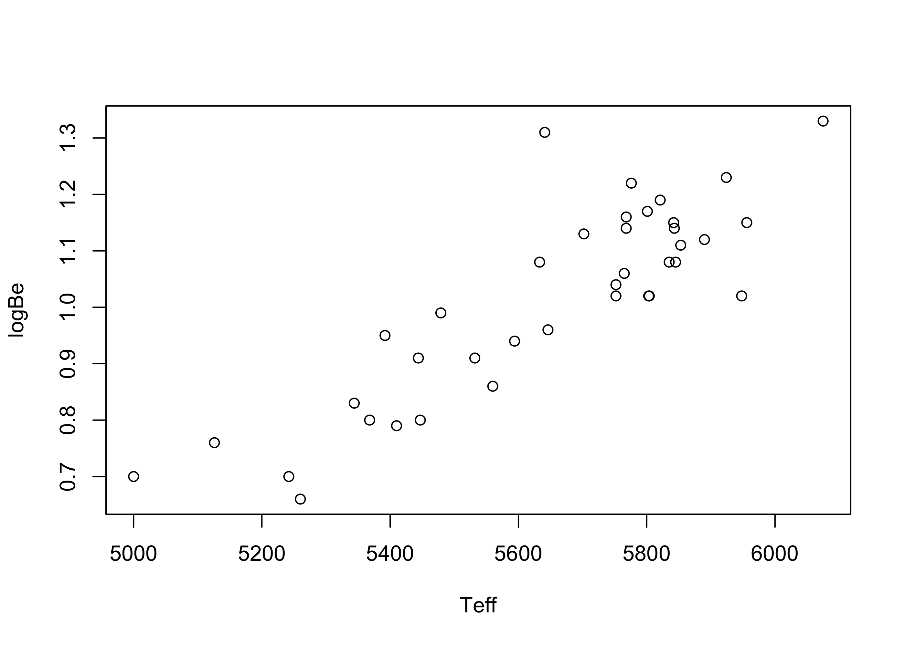
$$
$$
You have likely seen many plots like the one below in Figure 22.1, in which the values of one variable are plotted against the values of another. This is called a scatterplot. The data to make the plot are pairs of numbers \((x_1,Y_1),\dots,(x_n,Y_n)\). Below is an example.
Example 22.1 (Beryllium data) These data are taken from Santos et al. (2004) and can be downloaded in a .Rdata file from here. The \(x\) values in te scatterplot are temperatures of stars and the \(Y\) values are the natural log of the beryllium abundances in the corresponding stars.
load("data/beryllium.Rdata")
x <- beryllium$Teff
Y <- beryllium$logN_Be
plot(Y ~ x , xlab="Teff",ylab = "logBe")
Plots like these can be helpful for depicting the relationship between two random variables \(X\) and \(Y\). In addition, they can help researchers make predictions; for example, there is no star in the data set with temperature exactly \(5200\), but based if one were to draw a straight line through the points in the scatterplot, one could use the height of the line at \(x = 5200\) to make a reasonable guess about the log of beryllium abundance in such a star.
We first introduce what is called the correlation coefficient, which describes the strength and direction of a linear relationship between random variables, and then introduce simple linear regression analysis. The latter is a way to draw “the best” straight line through the data and to make statistical inferences—conclusions to which we can attach levels of confidence—about the linear relationship between the variables \(X\) and \(Y\).
When we suspect that two variables might be linearly related (related in such a way that one could draw a straight line through a scatterplot of their values), we often compute what is called Pearson’s correlation coefficient, which we will denote by \(r_{xY}\). This is a measure describing the strength and direction of a linear relationship between two variables. In order to give a formula for \(r_{xY}\), we first define the quantities \[ \begin{align*} S_{xx} &= \sum_{i=1}^n(x_i - \bar x_n)^2\\ S_{YY} &= \sum_{i=1}^n(Y_i - \bar Y_n)^2\\ S_{xY} &= \sum_{i=1}^n(x_i - \bar x_n)(Y_i - \bar Y_n), \end{align*} \] where \(\bar x_n = \sum_{i=1}^n x_i\) and \(\bar Y_n = \sum_{i=1}^n Y_i\). Now we define Pearson’s correlation coefficient:
Definition 22.1 (Pearson’s correlation coefficient) For data pairs \((x_1,Y_1),\dots,(x_n,Y_n)\), Pearson’s correlation coefficient is defined as \[ r_{xY} = \frac{\sum_{i=1}^n (x_i - \bar x_n)(Y_i-\bar Y_n)}{\sqrt{\sum_{i=1}^n(x_i - \bar x_n)^2 \sum_{i=1}^n(Y_i - \bar Y_n)^2}} = \frac{S_{xY}}{\sqrt{S_{xx}S_{YY}}}. \]
It may not be clear from the formula for \(r_{xY}\) what this quantity is supposed to tell us. One fact about this value, however, which is also not immediately clear from the formula, is that \(r_{xY}\) cannot take a value outside the interval \([-1,1]\). Let’s put this fact in a big box:
Proposition 22.1 (Possible values for Pearson’s correlation coefficient) Pearson’s correlation coefficient \(r_{xY}\) must take a value in \([-1,1]\).
Back to looking at the formula: If we look for a moment at the numerator of \(r_{xY}\), we see that if \(x_i\) and \(Y_i\) tend at the same time to exceed their respective means \(\bar x_n\) and \(\bar Y_n\) and tend at the same time to fall below their respective means, the correlation coefficient should take a positive value. However, if \(x_i\) tends to be below its mean while \(Y_i\) is above its mean and above its mean when \(Y_i\) is below its mean, then \(r_{xY}\) will probably take a negative value. If \(x_i\) and \(Y_i\) tend to fall above and below their respective means without regard to one another, then \(r_{xY}\) does not know whether to be positive or negative and so takes a value close to zero.
Figure 22.2 below shows a few scatterplots along with the value of Pearson’s correlation coefficient computed on the data.
n <- 100
X <- runif(n,0,10)
Y1 <- X + rnorm(n)
Y2 <- -X + rnorm(n,0,3)
Y3 <- rnorm(n)
Y4 <- -(X-5)^2 + rnorm(n,0,3)
Y5 <- cos(X/10*3*pi) + rnorm(n,0,.2)
par(mfrow = c(1,5),
mar = c(.1,.25,2,.25),
xaxt = "n",
yaxt = "n")
plot(Y1~X, main = sprintf(cor(X,Y1),fmt="%.2f"))
plot(Y2~X, main = sprintf(cor(X,Y2),fmt="%.2f"))
plot(Y3~X, main = sprintf(cor(X,Y3),fmt="%.2f"))
plot(Y4~X, main = sprintf(cor(X,Y4),fmt="%.2f"))
plot(Y5~X, main = sprintf(cor(X,Y5),fmt="%.2f"))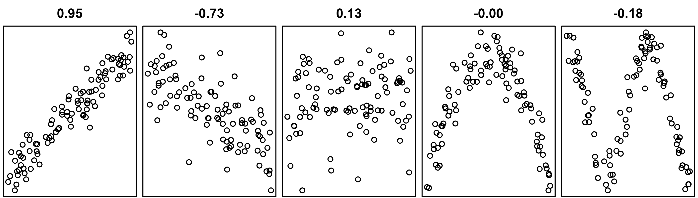
We may notice a few things:
As a summary, we may say that Pearson’s correlation coefficient describes the strength and direction of linear relationships. Very strong non-linear relationships, like the ones in the two rightmost panels of the plot, do not correspond to large values of Pearson’s correlation coefficient. Therefore, the quantity \(r_{xY}\) is only appropriate for describing linear relationships. If a scatterplot suggests a non-linear relationship—if you cannot draw a straight line through the data points—then it is not appropriate to use Pearson’s correlation coefficient to describe the relationship.
In statistics, the word “correlation” almost always means Pearson’s correlation, so a statistician would never say something like “what you are saying is correlated with what so and so is saying.” A statistician will not use the word “correlated” unless it is to describe the strength and direction of the linear relationship between two variables.
Pearson’s correlation between the response and the covariate in the beryllium data example is computed here:
rxY <- cor(x,Y)The value is \(r_{xY} = 0.8623328\), which suggest a quite strong positive linear relationship.
The simple linear regression model is a mathematical description of how the \(Y_i\) are related to the \(x_i\).
Definition 22.2 (Simple linear regression model) For data \((x_1,Y_1),\dots,(x_n,Y_n)\) the simple linear regression model assumes \[ Y_i = \beta_0 + \beta_1 x_i + \varepsilon_i \] for \(i =1,\dots,n\), where
The model states that for the value \(x_i\), the value of \(Y_i\) will be equal to the height of the line \(\beta_0 + \beta_1 x_i\) plus or minus some random amount. This random amount is often called an error, but there is nothing really erroneous going on; we just don’t expect all the \(Y\) values to fall exactly on the line \(\beta_0 + \beta_1 x\), so we allow them to be different by some amount \(\varepsilon\), and we assume that values of \(\varepsilon\) will have a Normal distribution centered at zero. All of this means we expect the \(Y\) values to bounce more or less around the line, falling above and below it at random.
Having written down the linear regression model, the next task for the statistician is to use the data to estimate the unknown quantities involved. There are three: The parameters \(\beta_0\) and \(\beta_1\) giving the intercept and slope of the line, and the parameter \(\sigma^2\) giving the variance of the error terms. Of the three parameters the slope parameter \(\beta_1\) is typically of primary interest. This parameter gives the change in the expected value of the response due to an increase in the value of the covariate by one unit; so it is the parameter \(\beta_1\) which allows the investigator to tell stories about the relationship between the covariate and the response.
We first focus on estimating \(\beta_0\) and \(\beta_1\). Reasonable guesses at the values of \(\beta_0\) and \(\beta_1\) might be obtained by drawing, with a ruler, a line through the scatterplot which runs as much as possible through the center of the points. Although this may give reasonable results, two different people might draw two different lines, and it would hardly possible to analyze the statistical properties of such a line. We would like to have a way of drawing the line such that we can depend on its on-average being the right one, or in the sense that if we collected more and more data our method of line-drawing would eventually lead us to the true line governing the true relationship between \(Y\) and \(x\). To this end, we will introduce a criterion for judging the quality of any line drawn through the points and use calculus to find the slope and intercept values which produce the best possible line—according to the criterion.
The most commonly used criterion for judging the quality of straight lines drawn through scatterplots is called the It is equal to the sum of squared vertical distances between the data points on the scatterplot and the line drawn. If the line \(y = b_0 + b_1x\) is drawn, for some slope \(b_1\) and intercept \(b_0\), the least squares criterion is defined as the sum \[ Q(b_0,b) = \sum_{i=1}^n(Y_i - (b_0 + b_1 x_i))^2 \] of squared vertical distances of the \(Y_i\) to the height of the line \(y = b_0 + b_1x\). It is possible to use calculus methods to find the slope \(b_1\) and intercept \(b_0\) which minimize this criterion. To present
Proposition 22.2 (Least squares estimators in simple linear regression) The least squares criterion \(Q(b_0,b_1)\) is uniquely minimized at \[ \begin{align*} \hat \beta_0 &= \bar Y_n - \hat \beta_1 \bar x_n \\ \hat \beta_1 &= \frac{\sum_{i=1}^n (x_i - \bar x_n)(Y_i-\bar Y_n) }{\sum_{i=1}^n(x_i - \bar x_n)^2} = r_{xY}\sqrt{\frac{S_{YY}}{S_{xx}}} \end{align*} \] provided \(S_{xx} > 0\).
The condition \(S_{xx} > 0\) is necessary, because we in the computation of \(\hat \beta_1\) we must divide by this sum of squares. Note, however, that \(S_{xx} = 0\) if and only if all the \(x_i\) are equal to the same value. In this case it would be absurd to try to predict the \(Y_i\) using the values of the \(x_i\), so we do not need to fret about this condition.
Note that we can obtain the sample variance of the observed response and covariate values as \(s^2_Y = (n-1)^{-1}S_{YY}\) and \(s^2_X = (n-1)^{-1}S_{xx}\), respectively. Then, to compute the least-squares estimators of the regression coefficients \(\beta_0\) and \(\beta_1\), one may obtain the slope as \(\hat \beta_1 = r_{xY}(s_Y/s_x)\) and then the intercept as \(\hat \beta_0 = \bar Y_n - \hat \beta_1 \bar x_n\).
The code below computes the least squares estimators of \(\beta_0\) and \(\beta_1\) on the beryllium data and makes a scatterplot with the least-squares line overlaid.
xbar <- mean(x)
b1 <- rxY * sd(Y) / sd(x)
b0 <- mean(Y) - b1*xbar
plot(Y ~ x, xlab = "Teff", ylab = "logBe")
abline(b0,b1)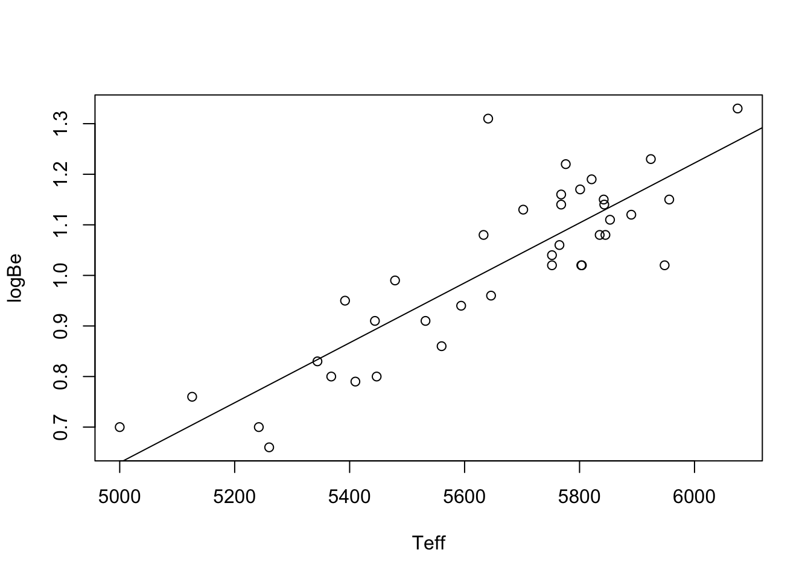
One obtains \(\hat \beta_0 = -2.3333252\) and \(\hat \beta_1 = 5.9260046\times 10^{-4}\). One can compute these as in the preceding code, or more simply using:
lm(Y~x)
Call:
lm(formula = Y ~ x)
Coefficients:
(Intercept) x
-2.3333252 0.0005926 An interpretation of the estimate of the slope parameter \(\beta_1\) is that an increase in the temperature measurement by one unit corresponds to an estimated increase in the expected log-beryllium level equal to \(5.9260046\times 10^{-4}\).
Now that we have introduced estimators for \(\beta_0\) and \(\beta_1\), we will consider estimating the other unknown parameter, which is the error term variance \(\sigma^2\). In order to define an estimator for this quantity, it will be convenient to define what we call fitted values and residuals. After obtaining \(\hat \beta_0\) and \(\hat \beta_1\), we define the fitted values as \[ \hat Y_i = \hat \beta_0 + \hat \beta_1 x_i \] and the residuals as \[ \hat \varepsilon_i = Y_i - \hat Y_i \] for \(i=1,\dots,n\). The fitted values are equal to the height of the least-squares line at the observed covariate values \(x_i\), and the residuals are the differences between the observed response values and the fitted values. We may think of the fitted values as predictions from our linear regression model and of the residuals reflection how far (and in what direction) our model missed the observed value.
Having defined the residuals, we now define an estimator of \(\sigma^2\) as \[ \hat \sigma^2 = \frac{1}{n-2}\sum_{i=1}^n\hat \varepsilon_i^2. \]
Here we compute the estimator of the error term variance on the beryllium data:
Yhat <- b0 + b1 * x
ehat <- Y - Yhat
n <- length(Y)
sigma_hat <- sqrt(sum(ehat^2)/(n-2)) # standard deviationWe obtain \(\hat \sigma^2 = 0.0077834\).
Here is a nice result about the estimator \(\hat \sigma^2\):
Proposition 22.3 (Unbiasedness of variance estimator in simple linear regression) Under the conditions of the simple linear regression model, we have \(\mathbb{E}\hat \sigma^2 = \sigma^2\).
The above result states that the estimator \(\hat \sigma^2\) is an unbiased estimator of \(\sigma^2\). “Unbiased” means that the sampling distribution of the estimator \(\hat \sigma^2\) is centered correctly around the value it is trying to estimate; if we were to observe many realizations of the estimator \(\hat \sigma^2\), these would have an average very close to the estimation target \(\sigma^2\).
It is nice to be able to draw the best line through a scatterplot of points. We know that the least-squares line is, of any line we could possibly draw, the one that minimizes the sum of the squared vertical distances between the points and itself.
Remember the whole idea behind statistics, though? If we were to collect another data set studying the same phenomenon, we would get different data; so what can we learn from this one single data set? The line we drew through the scatterplot is really a “guess” at where the true line would be. If we could go on collecting data on all the stars in the universe, we could then draw the “true” or “population” level line. But we only have the data in our sample.
So what can we learn from it?
As we have done before with population means and variances and proportions, we will formulate some hypotheses about the true best line underneath the data and use the least-squares line to test those hypotheses. Fundamentally, we are interested in knowing whether there exists a linear relation between the \(Y_i\) and the \(x_i\). The true line is specified by the unknown values of \(\beta_0\) and \(\beta_1\). Of these parameters, it is \(\beta_1\) which carries information about the relationship between the \(Y_i\) and the \(x_i\). We therefore concentrate on making statistical inferences about \(\beta_1\); that is, we try to learn what we can about \(\beta_1\) from the data.
What we can learn about \(\beta_1\) from the data depends on the behavior of out estimator \(\hat \beta_1\)—specifically how far away from the true \(\beta_1\) we should expect it to be. This information is contained in the sampling distribution of \(\hat \beta_1\).
Proposition 22.4 (Sampling distribution of slope estimator) Under the assumptions of the simple linear regression model we have \[ \hat \beta_1 \sim \mathcal{N}(\beta_1,\sigma^2/S_{xx}) \] as well as \((n-2)\hat \sigma^2/\sigma^2 \sim \chi_{n-2}^2\) with \(\hat \sigma^2\) and \(\hat \beta_1\) independent, so that \[ \frac{\hat \beta_1 - \beta_1}{\hat \sigma/\sqrt{S_{xx}}} \sim t_{n-2}. \tag{22.1}\]
The result in Equation 22.1 implies that under the assumptions of the simple linear regression model a \((1-\alpha)\times 100\%\) confidence interval for \(\beta_1\) may be constructed as \[ \hat \beta_1 \pm t_{n-2,\alpha/2} \hat \sigma / \sqrt{S_{xx}}. \]
We can compute this interval on the beryllium data with the R code:
alpha <- 0.05
Sxx <- sum((x - xbar)**2)
ta2 <- qt(1 - alpha/2,n-2)
se <- sigma_hat / sqrt(Sxx)
lo <- b1 - ta2 * se
up <- b1 + ta2 * seThis interval with \(\alpha = 0.05\) (so a \(95\%\) confidence interval) for \(\beta_1\) in the beryllium data example is given by \((0.00047,0.00071)\). One can use the preceding code to compute the bounds of the confidence interval or one can use:
confint(lm(Y~x)) # run ?confint to read documentation 2.5 % 97.5 %
(Intercept) -2.9983088165 -1.6683415095
x 0.0004749841 0.0007102168This gives confidence intervals for both the intercept \(\beta_0\) and the slope parameter \(\beta_1\).
Beyond constructing a confidence interval for \(\beta_1\), we may also be interested in testing hypotheses about the slope parameter. We consider testing hypotheses of the form \[ \begin{array}{lclcl} H_0\text{: } \beta_1 \geq 0 &\text{ or } & H_0\text{: } \beta_1 = 0 &\text{ or } & H_0\text{: } \beta_1 \leq 0\\ H_1\text{: } \beta_1 < 0 && H_1\text{: } \beta_1 \neq 0 && H_1\text{: } \beta_1 > 0. \end{array} \] In light of the result in Proposition 22.4, we can test the above sets of hypotheses at significance level \(\alpha\) by computing the test statistic \[ T_{\operatorname{test}}= \frac{\hat \beta_1}{\hat \sigma /\sqrt{S_{xx}}} \tag{22.2}\] and rejecting \(H_0\) if \[ \begin{array}{lclcl} T_{\operatorname{test}}< -t_{n-2,\alpha} &\text{ or } & |T_{\operatorname{test}}| > t_{n-2,\alpha/2}&\text{ or } & T_{\operatorname{test}}> t_{n-2,\alpha}. \end{array}. \] The corresponding p-values are given by the probabilities \[ \begin{array}{lclcl} P(T < T_{\operatorname{test}}) &\text{ or } & 2 \times P(T > |T_{\operatorname{test}}|) & \text{ or } & P(T > T_{\operatorname{test}}), \end{array} \] where \(T\sim t_{n-2}\) and \(T_{\operatorname{test}}\) represents the observed value of the test statistic.
Here we compute the value of the test statistic \(T_{\operatorname{test}}\) on the beryllium data:
Ttest <- b1/(sigma_hat/sqrt(Sxx))We obtain \(T_{\operatorname{test}} = 10.2183856\). To test \(H_0\): \(\beta_1 = 0\) versus \(H_1\): \(\beta_1 \neq 0\) at significance level \(\alpha = 0.05\), we compare this value to \(t_{n-1,\alpha/2} = t_{38-2,0.025} = 2.028094\). We see that we reject \(H_0\). Now we compute the p-value for the two-sided test:
pval <- 2*(1 - pt(abs(Ttest), df = n - 2))We obtain a p-value of \(3.4772185\times 10^{-12}\).
To test \(H_0\): \(\beta_1 \leq 0\) versus \(H_1\): \(\beta_1 > 0\) at significance level \(\alpha = 0.05\), we compare this value to \(t_{n-1,\alpha} = t_{38-2,0.05} = 1.6882977\). Again we see that we reject \(H_0\). Now we compute the p-value for the one-sided test:
pval <- 1 - pt(abs(Ttest), df = n - 2)The p-value is \(1.7386093\times 10^{-12}\).
We can easily obtain a p-value for the two-sided test (which is most often the test of interest) as follows:
summary(lm(Y~x))
Call:
lm(formula = Y ~ x)
Residuals:
Min 1Q Median 3Q Max
-0.17146 -0.05198 -0.02409 0.06506 0.30047
Coefficients:
Estimate Std. Error t value Pr(>|t|)
(Intercept) -2.333e+00 3.279e-01 -7.116 2.31e-08 ***
x 5.926e-04 5.799e-05 10.218 3.48e-12 ***
---
Signif. codes: 0 '***' 0.001 '**' 0.01 '*' 0.05 '.' 0.1 ' ' 1
Residual standard error: 0.08822 on 36 degrees of freedom
Multiple R-squared: 0.7436, Adjusted R-squared: 0.7365
F-statistic: 104.4 on 1 and 36 DF, p-value: 3.477e-12The p-value is given in the final column of the “Coefficients” table under Pr(>|t|) in the output above. Note that the table reports the p-value for testing \(H_0\): \(\beta_0 = 0\) versus \(H_1\): \(\beta_0 \neq 0\) as well as that for testing \(H_0\): \(\beta_1 = 0\) versus \(H_1\): \(\beta_1 \neq 0\). It is typically only the latter which is of interest to us.
Note also that the above output shows the value of \(\hat \sigma\), which is given as the “residual standard error”.
Beyond making inferences on the slope (via the construction of confidence intervals or testing hypotheses, as we have done), we are also interested in using the fitted (estimated) simple linear regression model to estimate the expected value of the response \(Y_i\) given that the covariate \(x_i\) is equal to some value. Let \(x_{\operatorname{new}}\) represent a covariate value, possible never observed in the data at hand. Then we would like to know what response values we can expect, on average, when the covariate takes the value \(x_{\operatorname{new}}\). That is, we would like to estimate the height of the true regression line \(\beta_0 + \beta_1x_{\operatorname{new}}\) at the covariate value \(x_{\operatorname{new}}\). We will use as our estimator of this quantity the height of the least-squares line \(\hat \beta_0 + \hat \beta_1 x_{\operatorname{new}}\) at this value of the covariate. The following result will show us how to construct a confidence interval for the height of the true regression line based on the height of the least-squares line at covariate value \(x_{\operatorname{new}}\).
Proposition 22.5 (Sampling distribution of height of least-squares line) Under the assumptions of the simple linear regresion model we have \[ \hat \beta_0 + \hat \beta_1 x_{\operatorname{new}} \sim \text{Normal}\left(\beta_0 + \beta_1 x_{\operatorname{new}},\sigma^2\left[\frac{1}{n} + \frac{(x_{\operatorname{new}} - \bar x_n)^2}{S_{xx}}\right]\right), \] where this is independent of \(\hat \sigma\), so that \[ \frac{\hat \beta_0 + \hat \beta_1 x_{\operatorname{new}} - (\beta_0 + \beta_1 x_{\operatorname{new}})}{\hat \sigma \sqrt{ \dfrac{1}{n} + \dfrac{(x_{\operatorname{new}} - \bar x_n)^2}{S_{xx}}}} \sim t_{n-2}. \]
It follows from Proposition 22.5 that a \((1-\alpha)100\%\) confidence interval can be constructed for \(\beta_0 +\beta_1 x_{\operatorname{new}}\) as \[ \hat \beta_0 + \hat \beta_1 x_{\operatorname{new}} \pm t_{n-2,\alpha/2}\hat \sigma \sqrt{ \frac{1}{n} + \frac{(x_{\operatorname{new}} - \bar x_n)^2}{S_{xx}}}. \tag{22.3}\]
In the beryllium data example, suppose we are interested in the expected beryllium level of stars with temperature \(x_{\operatorname{new}}= 5700\), we may compute this as follows:
xnew <- 5700
alpha <- 0.05
ta2 <- qt(1-alpha/2,n-2)
xbar <- mean(x)
se <- sigma_hat*sqrt(1/n + (xnew - xbar)^2/Sxx)
lo <- b0 + b1*xnew - ta2 * se
up <- b0 + b1*xnew + ta2 * seThe estimated average log-beryllium level for stars with temperature \(5700\) is estimated to be \(1.0444975\) with 95% confidence interval \((1.0148454,1.0741496)\). It is also possible to obtain this using the code:
lm_out <- lm(Y~x) # store output of lm() function in object lm_out
predict(lm_out,
newdata = data.frame(x = 5700),
interval = "confidence",
level = 0.95) fit lwr upr
1 1.044497 1.014845 1.07415Figure 22.4 depicts for the beryllium data the confidence interval in Equation 22.3 computed at each value \(x_{\operatorname{new}}\) over the entire range of observed covariate values. The vertical line is positioned at \(x_{\operatorname{new}}= 5700\). Note that the confidence intervals for the height of the true regression function get wider the further \(x_{\operatorname{new}}\) lies from the mean of the covariate values \(\bar x_n\).
plot(Y ~ x , xlab="Teff",ylab = "logBe")
abline(v = 5700, col = "gray")
abline(b0,b1)
alpha <- 0.05
ta2 <- qt(1-alpha/2,n-2)
xseq <- seq(min(x),max(x),length=99)
se_conf <- sigma_hat * sqrt( 1/n + (xseq - xbar)^2/Sxx)
lo_conf <- b0 + b1*xseq - ta2 * se_conf
up_conf <- b0 + b1*xseq + ta2 * se_conf
lines(lo_conf~xseq,lty=2)
lines(up_conf~xseq,lty=2)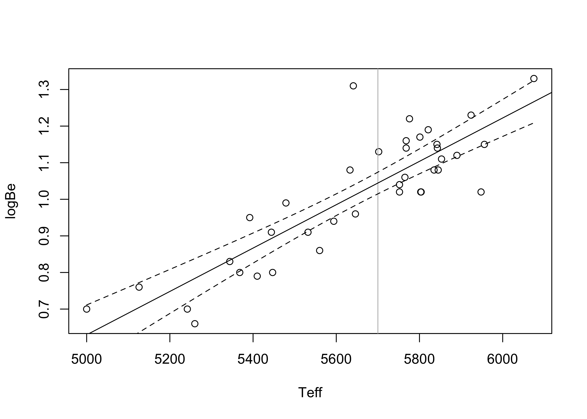
Consider trying to guess the value of a response \(Y_{\operatorname{new}}\) associated with a new observation \((x_{\operatorname{new}},Y_{\operatorname{new}})\). In the beryllium data example, you might try to guess the log-beryllium level in a star with temperature, say \(x_{\operatorname{new}}= 5700\). Using the fitted simple linear regression model, a natural guess is the fitted value \(\hat Y_{\operatorname{new}}= \hat \beta_0 + \hat \beta_1 x_{\operatorname{new}}\), which is the height of the least-squares line at the covariate value \(x_{\operatorname{new}}\). Since \(Y_{\operatorname{new}}\) is a random variable, we know that we cannot really predict its value in advance, so we should not put much trust in our guess. Just as we construct confidence intervals for unknown parameter values based on estimators computed on sample data, we should include with our guess a margin of error; that is, we should guess with an interval rather than with a single number. Since we are trying to guess the value of a random variable rather than trying to estimate the value of a parameter, we will call our interval guess a prediction interval rather than a confidence interval. We will aim to construct a prediction interval within which the value of \(Y_{\operatorname{new}}\), whenever it is eventually observed, will fall with some probability, say \(1 - \alpha\). We will make use of the following result to construct such an interval:
Proposition 22.6 In the simple linear regression model, given a new covariate value \(x_{\operatorname{new}}\), we have \[ Y_{\operatorname{new}}- \hat \beta_0 + \hat \beta_1 x_{\operatorname{new}}\sim \mathcal{N}\Big(0,\sigma^2\Big[1 + \frac{1}{n} + \frac{(x_{\operatorname{new}}- \bar x_n)^2}{S_{xx}}\Big]\Big) \] independently of \((n-2)\hat \sigma^2/\sigma^2 \sim \chi_{n-2}^2\), so that \[ \frac{Y_{\operatorname{new}}- \hat \beta_0 + \hat \beta_1 x_{\operatorname{new}}}{\hat \sigma \sqrt{ 1 + \dfrac{1}{n} + \dfrac{(x_{\operatorname{new}}- \bar x_n)^2}{S_{xx}}}} \sim t_{n-2}. \]
The above result gives us an idea of how far away \(Y_{\operatorname{new}}\) is likely to be from the height \(\hat Y_{\operatorname{new}}\) of the fitted line at covariate value \(x_{\operatorname{new}}\). We can use the result to define our \((1-\alpha)100\%\) prediction interval as \[ \hat \beta_0 + \hat \beta_1 x_{\operatorname{new}}\pm t_{n-2,\alpha/2}\hat \sigma \sqrt{1 + \frac{1}{n} + \frac{( x_{\operatorname{new}}- \bar x_n)^2}{S_{xx}}}. \tag{22.4}\]
Comparing this interval with the confidence interval in Equation 22.3 for the height of the regression line, we see that the prediction interval is wider. Here we compute the prediction interval for \(Y_{\operatorname{new}}\) corresponding to the covariate value \(x_{\operatorname{new}}= 5700\) on the beryllium data.
xnew <- 5700
alpha <- 0.05
ta2 <- qt(1-alpha/2,n-2)
xbar <- mean(x)
se <- sigma_hat*sqrt(1 + 1/n + (xnew - xbar)^2/Sxx) # this part changed
lo <- b0 + b1*xnew - ta2 * se
up <- b0 + b1*xnew + ta2 * seWe predict that the log-beryllium level for a star with temperature \(5700\) would lie in the interval \((0.8631315,1.2258635)\) with \(95\%\) probability. Note that this is a wider interval than the one we computed for the true height of the regression line at \(x_{\operatorname{new}}= 5700\). One can understand why the interval is wider by considering that, even if we knew the height of the true regression function, that is if we knew the value of \(\beta_0 + \beta_1 x_{\operatorname{new}}\), we still could not predict with certainty the value of \(Y_{\operatorname{new}}\), as the height of the regression line is equal only to the expected value of the response when the covariate value is equal to \(x_{\operatorname{new}}\). If we want to make a guess of a single value of \(Y_{\operatorname{new}}\), we must widen the interval, as in Equation 22.4.
The same prediction interval can be alternatively computed with this code:
lm_out <- lm(Y~x) # store output of lm() function in object lm_out
predict(lm_out,
newdata = data.frame(x = 5700),
interval = "prediction",
level = 0.95) fit lwr upr
1 1.044497 0.8631315 1.225863Figure 22.5 plots the prediction interval in Equation 22.4 as well as the confidence interval in eq-slrconfint for values of \(x_{\operatorname{new}}\) across the entire range of observed covariate values in the beryllium data. Here we see that the prediction interval are much wider than the confidence intervals—again, because these are attempting to capture individual observations, whereas the confidence intervals are only trying to capture the height of the true regression line.
plot(Y ~ x , xlab="Teff",ylab = "logBe")
abline(v = 5700, col = "gray")
abline(b0,b1)
alpha <- 0.05
ta2 <- qt(1-alpha/2,n-2)
xseq <- seq(min(x),max(x),length=99)
se_conf <- sigma_hat * sqrt( 1/n + (xseq - xbar)^2/Sxx)
lo_conf <- b0 + b1*xseq - ta2 * se_conf
up_conf <- b0 + b1*xseq + ta2 * se_conf
lines(lo_conf~xseq,lty=2)
lines(up_conf~xseq,lty=2)
se_pred <- sigma_hat *sqrt(1 + 1/n + (xseq - xbar)^2/Sxx)
lo_pred <- b0 + b1*xseq - ta2 * se_pred
up_pred <- b0 + b1*xseq + ta2 * se_pred
lines(lo_pred~xseq,lty=3)
lines(up_pred~xseq,lty=3)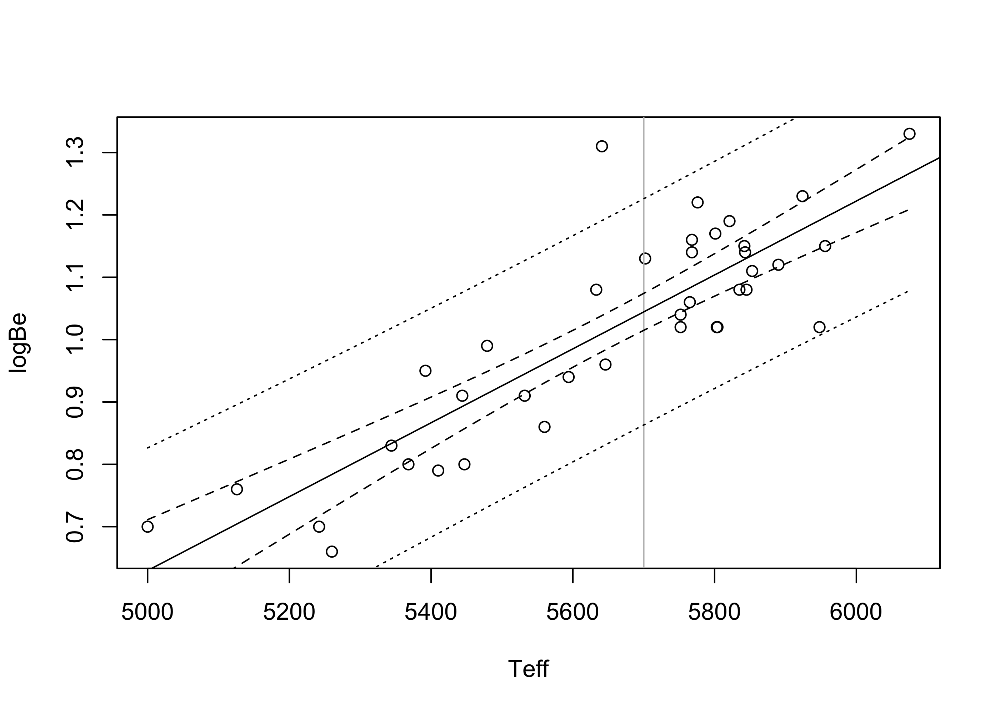
It is important to be familiar with some other quantities which are typically included in simple linear regression output. In simple linear regression, as well as in other linear models, one is often interested in summarizing how much the model was able to “explain”. Specifically, one might wonder how much is gained by considering the covariate values \(x_1,\dots,x_n\) as predictors of the values of the responses \(Y_1,\dots,Y_n\). To answer this question, we define the following quantities called sums of squares.
The total sum of squares: \(\quad \displaystyle \operatorname{SS}_{\operatorname{Tot}}= \sum_{i=1}^n(Y_i - \bar Y_n)^2\)
The regression sum of squares: \(\quad \displaystyle \operatorname{SS}_{\operatorname{Reg}}= \sum_{i=1}^n(\hat Y_i - \bar Y_n)^2\)
The error sum of squares: \(\quad \displaystyle \operatorname{SS}_{\operatorname{Error}}= \sum_{i=1}^n(Y_i - \hat Y_i)^2\)
In addition, we define a quantity called the coefficient of determination as \[ R^2 = \frac{\operatorname{SS}_{\operatorname{Reg}}}{\operatorname{SS}_{\operatorname{Tot}}}. \] The above definitions allow us to decompose the total sum of squares as \[ \operatorname{SS}_{\operatorname{Tot}}= \operatorname{SS}_{\operatorname{Reg}}+ \operatorname{SS}_{\operatorname{Error}}. \] Note that this fact tells us we will always have \(R^2 \in [0,1]\). Moreover we can interpret \(R^2\) as the proportion of variation in \(Y_1,\dots,Y_n\) accounted for—or “explained”—by our simple linear regression model. We will define these quantities in exactly the same way in Chapter 23 in the case of multiple linear regression.
Note that the value of \(R^2\) is printed in the output of summary(lm(Y~x)) as Multiple R-squared.
We find that the sums of squares defined above, when appropriately scaled, have chi-squared distributions. In particular we have
In the above, \(\phi_{\operatorname{Tot}}\) and \(\phi_{\operatorname{Reg}}\) denote what are called “non-centrality parameters”. So far we have only studied chi-squared distributions which do not have non-centrality parameters; so we might call the chi-squared distributions we have so far studied “central” chi-squared distributions. We will describe non-central chi-squared distributions in detail elsewhere. For now, dividing \(\operatorname{SS}_{\operatorname{Tot}}\) and \(\operatorname{SS}_{\operatorname{Reg}}\) by the degrees of freedom parameters of their chi-squared distributions gives:
The regression mean square: \(\quad \displaystyle \operatorname{MS}_{\operatorname{Reg}}= \frac{\operatorname{SS}_{\operatorname{Reg}}}{1}\)
The error mean square: \(\quad \displaystyle \operatorname{MS}_{\operatorname{Error}}= \frac{\operatorname{SS}_{\operatorname{Error}}}{n-2}\)
Included in typical output for simple linear regression is an analysis of variance (ANOVA) table as in Table 22.1.
| Source | Df | SS | MS | F-value | p-value |
|---|---|---|---|---|---|
| Regression | 1 | \(\operatorname{SS}_{\operatorname{Reg}}\) | \(\operatorname{MS}_{\operatorname{Reg}}\) | \(F_{\operatorname{test}}\) | \(P(F > F_{\operatorname{test}})\) |
| Error | \(n-2\) | \(\operatorname{SS}_{\operatorname{Error}}\) | \(\operatorname{MS}_{\operatorname{Error}}\) | ||
| Total | \(n-1\) | \(\operatorname{SS}_{\operatorname{Tot}}\) |
In addition to the sums of squares, the mean squares, and the degrees of freedom, we see that the ANOVA table also include an F-value and a p-value. These are defined as follows:
These quantities are the test statistic and p-value for a test called the overall F-test. We will give more attention to the overall F-test when we come to multiple linear regression in Chapter 23. In simple linear regression, the overall F-test simply tests \[ \text{$H_0$: $\beta_1 = 0$ versus $H_1$: $\beta_1 \neq 0$}. \] In addition, in simple linear regression we have \(F_{\operatorname{test}}= T_{\operatorname{test}}^2\), where \(T_{\operatorname{test}}\) is the test statistic defined in Equation 22.2; for what it’s worth we also have \[ F_{\operatorname{test}}= \frac{(n-2)r_{xY}^2}{1-r_{xY}^2}. \]
We next compute all the entries in the simple linear regression ANOVA table on the beryllium data:
Ybar <- mean(Y)
SST <- sum((Y - Ybar)^2)
SSR <- sum((Yhat - Ybar)^2)
SSE <- sum((Y - Yhat)^2)
MSR <- SSR / 1
MSE <- SSE / (n-2)
Ftest <- MSR / MSE # same as (n-2)*rxY^2/(1 - rxY^2)
pval <- 1 - pf(Ftest,1,n-2)The ANOVA table is shown in Table 22.2.
| Source | Df | SS | MS | F value | p-value |
|---|---|---|---|---|---|
| Teff | 1 | 0.813 | 0.813 | 104.415 | 0.00 |
| Error | 36 | 0.28 | 0.008 | ||
| Total | 37 | 1.093 |
Note that \(F_{\operatorname{test}}= 104.4154041\), which is equal to the square of the \(T_{\operatorname{test}}\) statistic computed earlier: \(T_{\operatorname{test}}^2= (10.2183856)^2\).
We can also obtain the ANOVA table with this code:
anova(lm(Y~x))Analysis of Variance Table
Response: Y
Df Sum Sq Mean Sq F value Pr(>F)
x 1 0.81271 0.81271 104.42 3.477e-12 ***
Residuals 36 0.28020 0.00778
---
Signif. codes: 0 '***' 0.001 '**' 0.01 '*' 0.05 '.' 0.1 ' ' 1Implicit in Definition 22.2 of the simple linear regression model are the following assumptions about the data \((x_1,Y_1),\dots,(x_n,Y_n)\). We take each one of them in turn:
To check Assumption 1 we typically look at a Normal quantile-quantile plot of the residuals \(\hat \varepsilon_1,\dots,\hat\varepsilon_n\). Recall that the residuals are “standing in” for the error terms \(\varepsilon_1,\dots,\varepsilon_n\) (the deviations of the responses from the true regression function), which are assumed to be normally distributed. Figure 22.6 shows a Q-Q plot of the residuals on the beryllium data:
qqnorm(scale(ehat))
abline(0,1)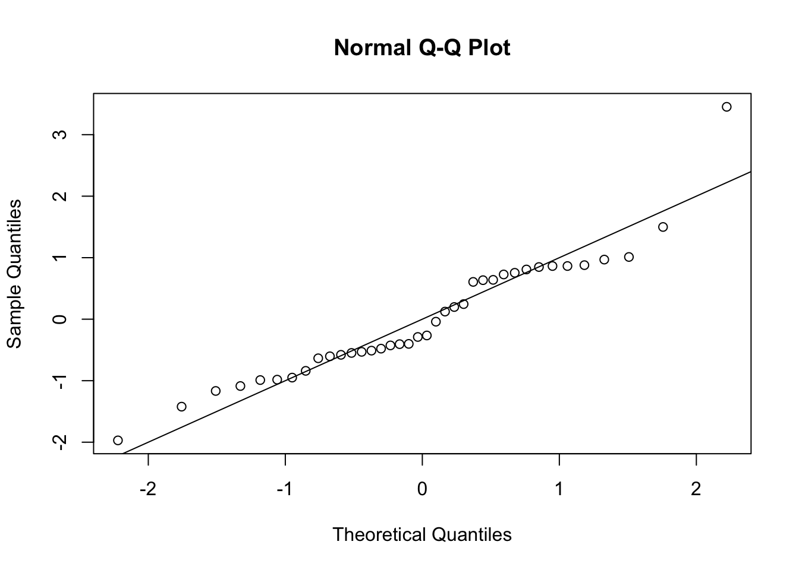
Figure 22.7 shows another version of the plot generated by the following code:
plot(lm(Y~x), which=2)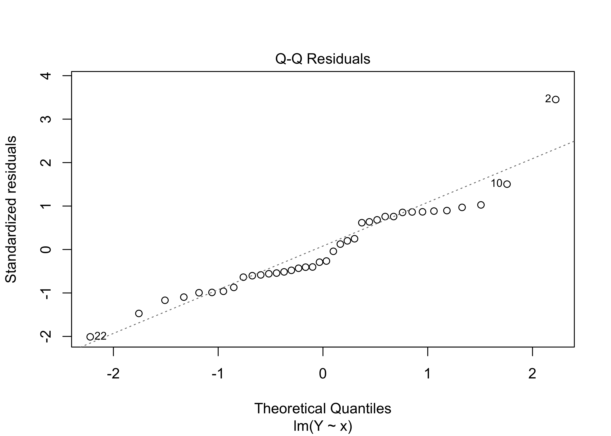
lm() function.
One checks whether the points in the normal Q-Q plot lie along a straight line. It is important to note that it is really only important to check the normality assumption when the sample size is small (say less than 30). In the end, our inference procedures (confidence intervals and hypothesis tests) require that the distribution of \(\hat \beta_1\) be approximately normal and that we obtain a good estimate of the error term variance \(\sigma^2\). The response values do not have to be normally distributed around the true regression function in order to ensure this (provided the sample is large). For the beryllium data, the Q-Q plot does not raise any serious concerns about whether our confidence intervals and p-values and so on can be trusted.
Assumption 2 is more critical than the normality assumption, particularly if we wish to use our fitted model to make prediction intervals for \(Y_{\operatorname{new}}\) corresponding to new covariate values \(x_{\operatorname{new}}\). We can check the assumption of equal response variance across the range of covariate values by looking at a residuals versus fitted values plot. That is, we can plot the values \(\hat \varepsilon_1,\dots,\hat \varepsilon_n\) against the values \(\hat Y_1,\dots,\hat Y_n\) and check to see if any patterns in the plot are visible. Figure 22.8 shows this plot for the beryllium data.
plot(ehat ~ Yhat)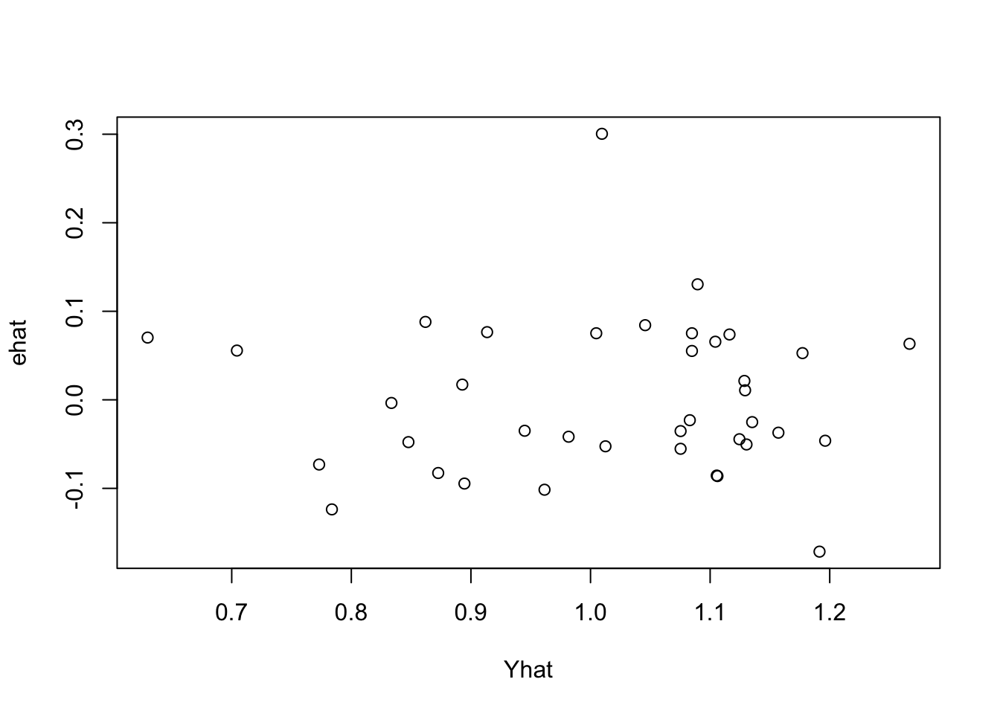
Figure 22.9 gives the same plot obtained from the output of the lm() function.
plot(lm(Y~x),which=1)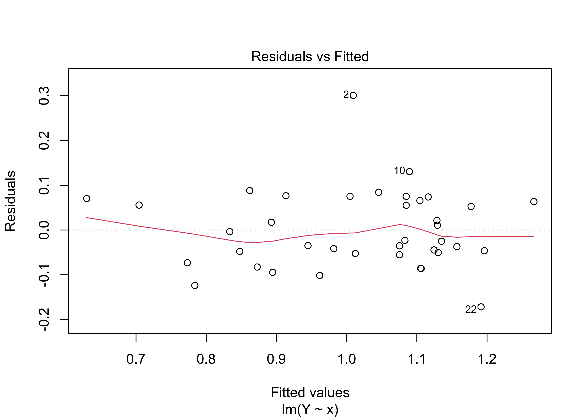
lm() function.
Ideally, we would like to see a constant vertical spread of the points across the entire plot. A non-constant spread can indicate that the responses do not have the same variance across all values of the covariate.
Figure 22.10 shows an example of a residuals versus fitted values plot that indicates non-constant variance in the responses. We see from the “fanning” shape in the residuals versus fitted values plot that the variance of the responses increases with the value of the covariate.
n <- 100
x <- runif(n,0,10)
Y <- x + rnorm(n,0,1 + x)
lm_out <- lm(Y~x)
par(mfrow=c(1,2),mar=c(4,4,1,2))
plot(Y~x)
abline(lm_out)
plot(lm_out$resid ~ lm_out$fitted.values,
ylab = "residuals",
xlab = "fitted values")
abline(h = 0, col = "red", lty = 3)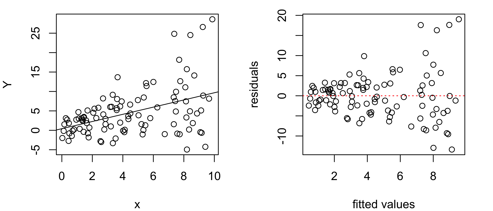
Figure 22.11 shows another example. The residuals versus fitted values plot shows a bulging pattern, indicating that the variance of the response values increases and then decreases with the value of the covariate.
Y <- -x + rnorm(n,0,2*dnorm(x,5,2)/dnorm(0,0,2))
lm_out <- lm(Y~x)
par(mfrow=c(1,2),mar=c(4,4,1,2))
plot(Y~x)
abline(lm_out)
plot(lm_out$resid ~ lm_out$fitted.values,
ylab = "residuals",
xlab = "fitted values")
abline(h = 0, col = "red", lty = 3)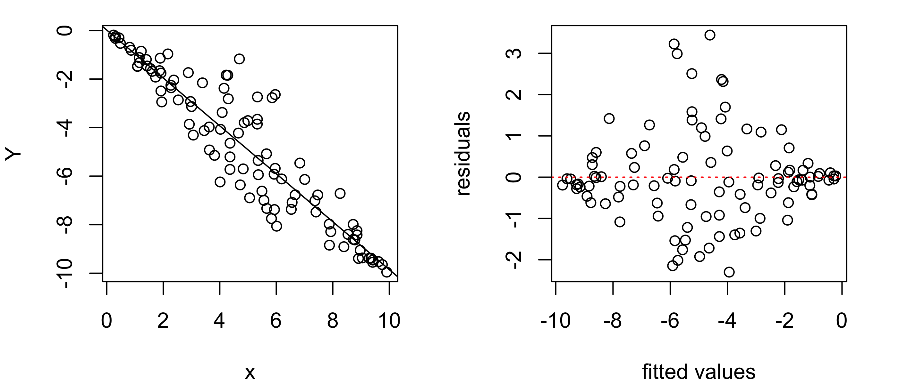
Assumption 3 is implied by the very name of the model: the simple linear regression model assumes that a straight line can explain the relationship between the responses and the covariate values. We can also check this assumption by looking at a residuals versus fitted values plot, looking for any patterns, for example, points lying all above the horizontal axis and then all below.
Figure 22.12 shows an example of what the residuals versus fitted values plot can look like when the relationship between the response and the covariate is non-linear. If we see such patterns in the residuals versus fitted values plot, we may need to abandon the linear regression model or consider transforming our data to enforce a linear relationship between the response and covariate values.
Y <- exp(x/3) + rnorm(n,0,sqrt(x))
lm_out <- lm(Y~x)
par(mfrow=c(1,2),mar=c(4,4,1,2))
plot(Y~x)
abline(lm_out)
plot(lm_out$resid ~ lm_out$fitted.values,
ylab = "residuals",
xlab = "fitted values")
abline(h = 0, col = "red", lty = 3)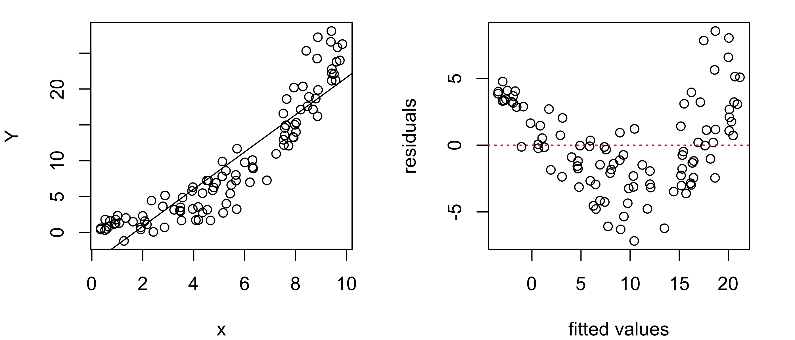
Figure 22.13 shows an example of the ideal appearance of the points in a residuals versus fitted values plot: a random scatter with no discernible pattern.
Y <- - x + rnorm(n,0,1)
lm_out <- lm(Y~x)
par(mfrow=c(1,2),mar=c(4,4,1,2))
plot(Y~x)
abline(lm_out)
plot(lm_out$resid ~ lm_out$fitted.values,
ylab = "residuals",
xlab = "fitted values")
abline(h = 0, col = "red", lty = 3)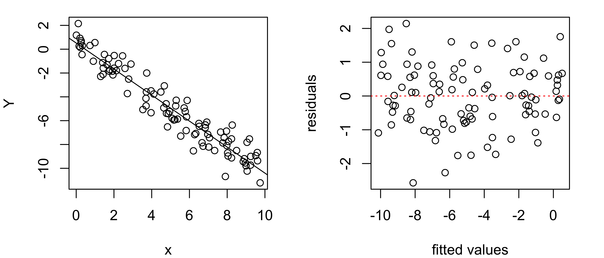
Assumption 4, that the response values are independent, is more difficult to check. One often relies on the design of the study or on the method of data collection to ensure independence of the response values, so that one must simply make this assumption without checking for it. One case in which the response values may not be independent is when the data are collected over time, for example if the covariate is price of a stock and the response is the price of another stock and these are measured daily during some period of time. In this case, the value of the response will depend on its previous value, so that the independence assumption will be violated.
When the relationship between the response and the covariate is found to be non-linear, it may still be possible to use the simple linear regression model after transforming the response or the covariate or both such that the relationship between the variables is “linearized”. If one chooses to do this, it is important that one give proper interpretation to the coefficients in the model fitted based on the transformed data. Here we go through an example:
Example 22.2 (Abalone data) The abalone is some kind of edible sea creature; see Figure 22.14. A data set provided by Nash and Ford (1994), downloadable here, contains measurements of several thousand abalones. After downloading the data, we read it into R and prepare to fit a simple linear regression model with the shucked weight variable as the response and the length variable as the covariate.
abalone <- read.csv(file = "data/abalone.data",
col.names = c("Sex",
"Length",
"Diameter",
"Height",
"Whole_Wt",
"Shucked_Wt",
"Viscera_Wt",
"Shell_Wt",
"Rings"))
head(abalone) Sex Length Diameter Height Whole_Wt Shucked_Wt Viscera_Wt Shell_Wt Rings
1 M 0.350 0.265 0.090 0.2255 0.0995 0.0485 0.070 7
2 F 0.530 0.420 0.135 0.6770 0.2565 0.1415 0.210 9
3 M 0.440 0.365 0.125 0.5160 0.2155 0.1140 0.155 10
4 I 0.330 0.255 0.080 0.2050 0.0895 0.0395 0.055 7
5 I 0.425 0.300 0.095 0.3515 0.1410 0.0775 0.120 8
6 F 0.530 0.415 0.150 0.7775 0.2370 0.1415 0.330 20Y <- abalone$Shucked_Wt
x <- abalone$Length
n <- length(Y)Note that there are \(4176\) observations in the data set. Can we reliably predict the shucked weight of the abalone from its length?
Figure 22.15 shows in the left panel a scatterplot of the shucked weight measurements versus the length measurements with the least-squares line overlaid. The right panel shows the residuals versus fitted values plot. In these plots it is apparent that the relationship between the shucked weight and the length of abalones is non-linear. The simple linear regression model is not suitable for these data.
lm1 <- lm(Y~x)
par(mfrow=c(1,2),mar=c(4,4,1,2))
plot(Y~x,
xlab = "Length",
ylab = "Shucked weight")
abline(lm1)
plot(lm1,which =1)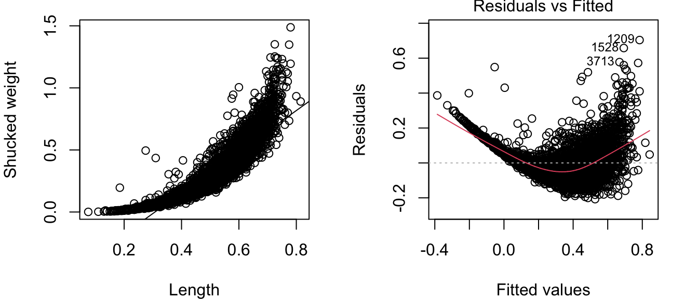
However, it may be that after a transformation of one or the other or both of the variables, the relationship will become linear. In this situation, one may try out a few different transformations.
It may be reasonable to assume that the shucked weight is some scalar multiple of the volume of the abalone, and that the latter may be linearly related to the cube of the length (after all, if the shape of the abalone was that of a rectangular cuboid, its volume would be the product of its length, width, and height). Based on this reasoning, suppose we try replacing the length with the cube of the length in the simple linear regression model. We obtain the plots below:
x3 <- x**3
lm2 <- lm(Y~x3)
par(mfrow=c(1,2),mar=c(4,4,1,2))
plot(Y~x3,
xlab = "Cubed length",
ylab = "Shucked weight")
abline(lm2)
plot(lm2,which =1)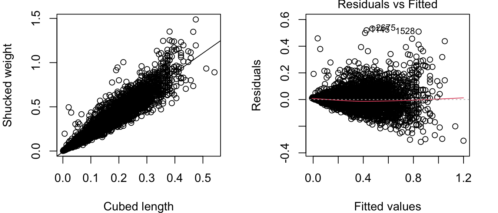
From Figure 22.16, it appears that the shucked weight truly does have an approximately linear relationship to the cubed length! However, we now see a different problem, which is that the variances of the shucked weights appear to be larger for larger cubed widths. This is apparent in the scatterplot in the way the vertical spread of the points increases from left to right; this is made more apparent in the residuals versus fitted values plot, which shows that the spread of the residuals increases dramatically with the fitted value. So again, one of the assumptions of the simple linear regression model is violated.
In some situations, a proportional change in the covariate will correspond to a proportional change in the expected value of the response. For example, one might imagine that if the abalone length is multiplied by some factor, then the expected shucked weight would be multiplied by some other factor. In such a situation, one may consider taking the natural logarithm of both the response and the covariate. If we do this with the shucked weights and the lengths of the abalones, we obtain the following:
logx <- log(x)
logY <- log(Y)
lm3 <- lm(logY~logx)
par(mfrow=c(1,2),mar=c(4,4,1,2))
plot(logY~logx,
xlab = "log(Length)",
ylab = "log(Shucked weight)")
abline(lm3)
plot(lm3,which =1)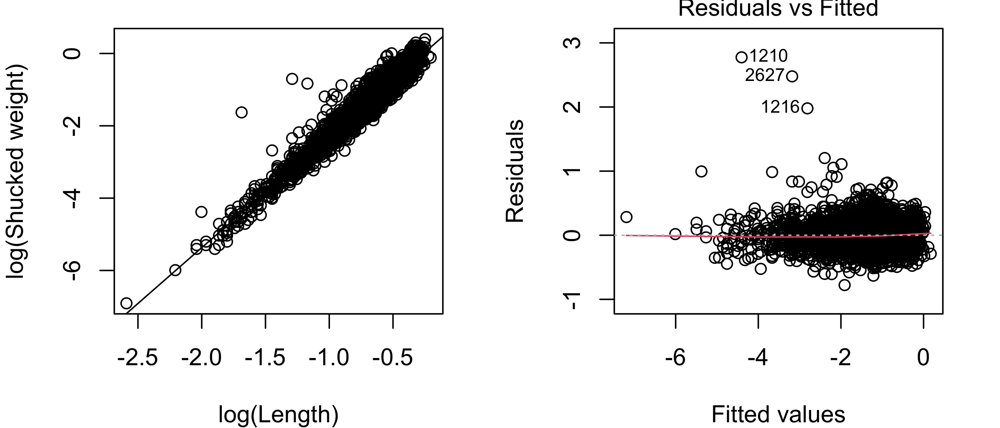
Figure 22.17 exhibits a scatterplot and residuals versus fitted values plot indicating that the assumptions of the simple linear regression model are satisfied. Given the very large sample size (\(n = 4176\)), it is not important to check the assumption that the responses are normally distribution around the regression line. For what it’s worth, the normal Q-Q plot of the residuals obtained from the simple linear regression model using the log-transformed response and covariate is shown in Figure 22.18. The plot suggests a considerable deviation from normality; however, again, because of the large sample size, the estimator \(\hat \beta_1\) will still have approximately a normal distribution, so that we need not doubt the validity of confidence intervals for \(\beta_1\) or of p-values for testing hypotheses about \(\beta_1\).
plot(lm3,which = 2)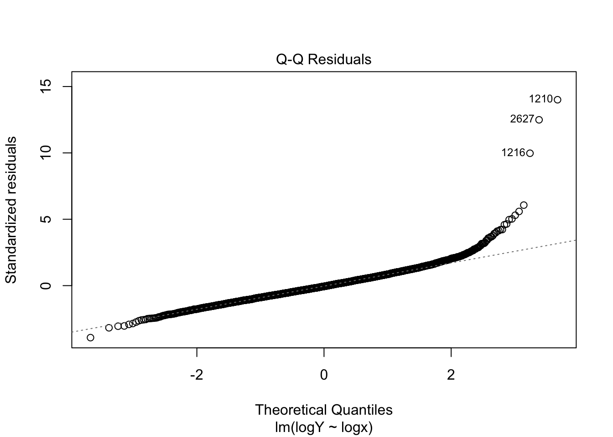
To better understand the reasoning behind taking the natural log of both the response and the covariate, one may write \[ \log y = \beta_0 + \beta_1 \log x, \] and from here, using calculus notation for taking the derivative of both sides with respect to \(x\), \[ \frac{d \log y}{dx} = \beta_1 \frac{1}{x} \iff d \log y = \beta_1 \frac{dx}{x}. \] Now, since \(d \log y/ dy = 1/y\), we may write \(d \log y = dy/y\). So we end up with \[ \frac{dy}{y} = \beta_1\frac{dx}{x}, \] which represents a linear relationship between a proportional change in \(x\) and a proportional change in \(y\).
Suppose we have transformed our data in order to obtain a linear relationship between the response and the covariate. Then, if we want to use the model to make predictions, we must make our predictions in the “transformed world” and then back-transform them.
In the abalone data example, suppose we wanted to use the model fitted to the log-transformed data to construct a \(95\%\) prediction interval for the shucked weight of an abalone with length \(x_{\operatorname{new}}=0.75\). Then we would plug \(\log(x_{\operatorname{new}}) = \log(0.75)\) into the model fit on the log-transformed data, obtaining a \(95\%\) prediction interval for \(\log(Y_{\operatorname{new}})\), where \(Y_{\operatorname{new}}\) is the as-yet-unobserved shucked weight of an abalone with length \(x_{\operatorname{new}}= 0.75\). After obtaining the prediction interval for the transformed response value \(\log(Y_{\operatorname{new}})\), we must back-transform it, in this case by exponentiating the endpoints of the interval (using \(e^{\log a} = a\)).
xnew <- 0.75
logxnew <- log(xnew)
logYnew_pred <- predict(lm3,newdata = data.frame( logx = logxnew), int = "pred")
Ynew_pred <- exp(logYnew_pred)
Ynew_pred fit lwr upr
1 0.9193347 0.622883 1.356878We obtain the interval \((0.622883,1.356878)\). Constructing this prediction interval over the entire range of observed abalone lengths results in the intervals shown in Figure 22.19.
plot(Y~x,
col="gray",
xlab = "Length",
ylab = "Shucked weight")
logxnew <- seq(min(logx),max(logx),length=500)
logYnew_pred <- predict(lm3,newdata = data.frame(logx = logxnew),int = "pred")
lines(exp(logYnew_pred[,1]) ~ exp(logxnew), col = "red")
lines(exp(logYnew_pred[,2]) ~ exp(logxnew), col = "red", lty = 3,lwd=1.5)
lines(exp(logYnew_pred[,3]) ~ exp(logxnew), col = "red", lty = 3,lwd=1.5)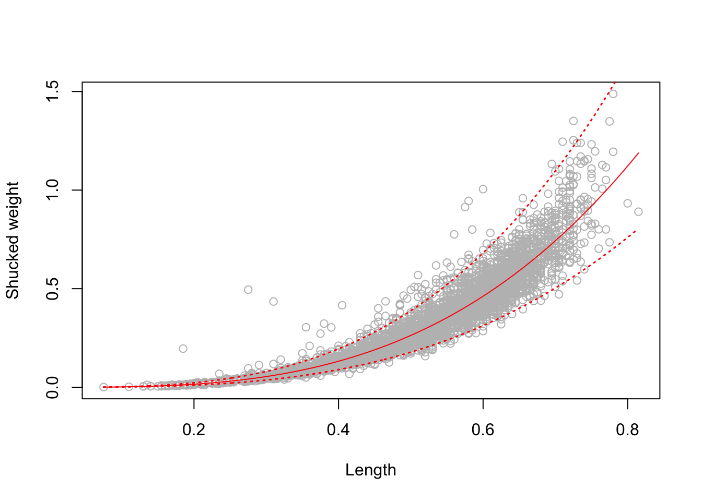
Outliers are data points which do not appear to conform to the pattern of the majority of the data points. There is no hard-and-fast rule for calling an observation an outlier. Even so, it can be useful to discuss some tools for identifying observations which are, in some sense, nonconforming. Why should we want to identify such observations? One reason is that these observations, if not removed from the data, could have a distorting influence on our estimators—in the case of simple linear regression, an outlier could “pull” the least-squares line towards itself and thus away from the true regression line running through the center of the data points. Another reason is that outliers often have a reason for lying far away from the other data points, and these reasons, if discovered, can yield new scientific insights.
In simple linear regression, an observation is generally considered outlying if it lies far away from the least-squares line. However, a careful analysis will show that points lying far from the least-squares line will not generally have an equal influence over the fitted model.
To understand this, let’s generate a fake data set and then add one extra observation to it to see out the least-squares line changes.
Figure 22.20 shows scatterplots of a set of \(n =10\) data pairs \((x_1,Y_1),\dots,(x_n,Y_n)\), plotted as open circles, to which an additional data pair has been added, plotted as a filled circle. The solid line in each plot is the least-squares line based on the original \(n\) data points, while the dashed line is the least-squares line of all the data points, including the additional point. We see that when a point is added which lies close to the least-squares line based on the original data points, the line does not change by much. However, if the new point lies far from the least-squares line based on the original data points, the line will change more; moreover, if the new point is far away, but lies near the center of the observed covariate values (the \(x\) values), the least-squares line will be shifted up or down by some small amount, but if, in addition to lying far away from the least-squares line, it also lies far from the center of the observed covariate values, it will have a more dramatic effect on the fitted line.
n <- 20
b0 <- 1
b1 <- -1/2
sg <- .2
x0 <- runif(n,0,5)
e <- rnorm(n,0,sg)
Y0 <- b0 + b1 * x0 + e
par(mfrow=c(2,2),mar=c(4,4,1,2))
x <- c(x0,.3)
Y <- c(Y0,-1.3)
plot(Y~x)
abline(lm(Y0~x0))
points(Y[n+1]~x[n+1], col = "red",pch = 19)
abline(lm(Y~x),lty = 2, col = "red")
x <- c(x0,4)
Y <- c(Y0,-1)
plot(Y~x)
abline(lm(Y0~x0))
points(Y[n+1]~x[n+1], col = "red",pch = 19)
abline(lm(Y~x),lty = 2, col = "red")
x <- c(x0,2.5)
Y <- c(Y0,1)
plot(Y~x)
abline(lm(Y0~x0))
points(Y[n+1]~x[n+1], col = "red",pch = 19)
abline(lm(Y~x),lty = 2, col = "red")
x <- c(x0,4)
Y <- c(Y0,1)
plot(Y~x)
abline(lm(Y0~x0))
points(Y[n+1]~x[n+1], col = "red",pch = 19)
abline(lm(Y~x),lty = 2, col = "red")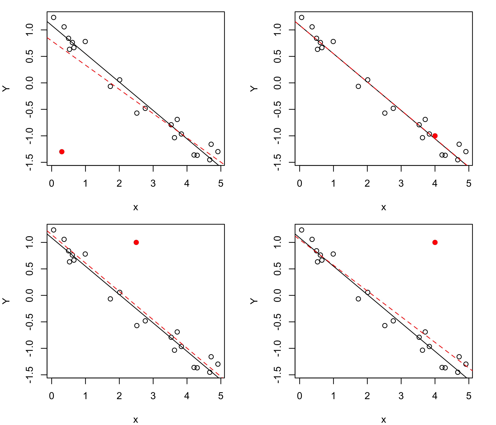
We introduce two quantites used in simple linear regression for identifying outliers. The first is the leverage of a point, which has strictly to do with how far away the \(x\)-coordinate of a point lies from the center of the observed covariate values.
Definition 22.3 (Leverage in simple linear regression) The leverages of the observed data points \((x_1,Y_n),\dots,(x_n,Y_n)\) are defined as \[ \text{lev}_i = \frac{1}{n} + \frac{(x_i - \bar x_n)^2}{S_{xx}} \] for \(i =1,\dots,n\).
Note that the leverage of an observation increases the further it lies from the mean of the observed covariate values. It is interesting to note that the leverage appears in Equation 22.3 and Equation 22.4, where in those expressions it is the leverage of a new covariate value \(x_{\operatorname{new}}\). The fact that the leverage increases as the distance between \(x_{\operatorname{new}}\) and \(\bar x_n\) increases accounts for the “flaring out” of the confidence and prediction intervals seen in Figure 22.5 and Figure 22.19.
One way to understand why the leverage of an observation plays a role in determining its status as an outlier as well as in determining the width of confidence or prediction intervals is that the least-squares regression line must pass through the point \((\bar x_n,\bar Y_n)\). This is simply a consequence of the expressions for \(\hat \beta_0\) and \(\hat \beta_1\) given in Proposition 22.2. Since the least-squares line has to pivot around this point, the position of the line is more “stable” nearer this point than further away. Confidence and prediction intervals are correspondingly narrowest when \(x_{\operatorname{new}}\) is closest to (or equal to) \(\bar x_n\).
Note that an observation may have a high leverage value but not be considered an outlier, as the pair \((x_i,Y_i)\) may still lie close to the least-squares line.
The second quantity useful for identifying outliers is called Cook’s distance. To define the Cook’s distances, we must first introduce some new notation: For each \(j=1,\dots,n\), let \(\hat Y_{j(i)}\) denote the predicted value for \(Y_j\) when obtained by fitting the model to the data after removing observation \(i\). Cook’s distance compares the value \(\hat Y_{j(i)}\) with the predicted value \(\hat Y_j\), where the latter is the prediction based on the complete data set.
Definition 22.4 (Cook’s distance) The Cook’s distances of the observations \((x_1,Y_1),\dots,(x_n,Y_n)\) are defined as \[ D_i = \frac{1}{2 \hat \sigma^2}\sum_{j = 1 }^n(\hat Y_j - \hat Y_{j(i)})^2 = \frac{\hat e_i^2}{2\hat \sigma^2}\frac{\text{lev}_i}{(1 - \text{lev}_i)^2} \] for \(i =1,\dots,n\).
We can obtain a plot of the Cook’s distances on the beryllium data with this code:
load("data/beryllium.Rdata")
x <- beryllium$Teff
Y <- beryllium$logN_Be
plot(lm(Y~x),which = 4)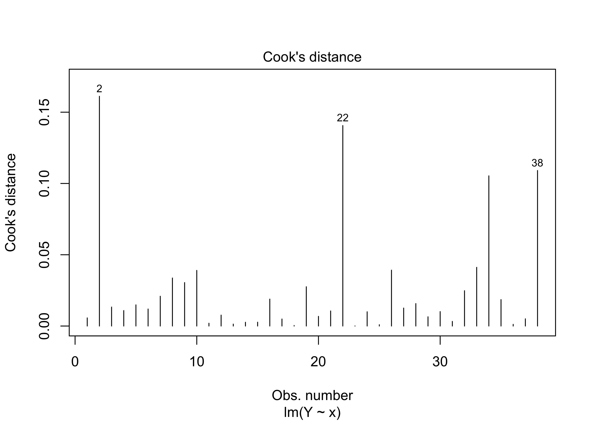
There is no universally prescribed way of judging when a Cook’s distance value indicates an outlier. Yet, greater values correspond to greater outlyingness, so identifying observations with “extreme” (however this is judged, whether visually or otherwise) Cook’s distances is a starting point for finding data points which do not conform to the pattern in the majority of the data.